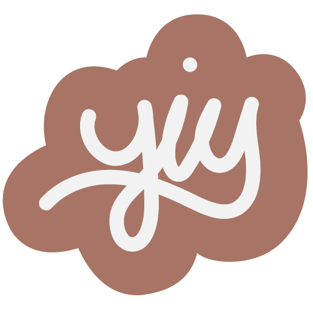

Portfolio Website
Project Overview
The goal of this project was to create a fully functional, professional-level portfolio website based on our after-program career goals and industry expectations, showcase projects we've worked on, and demonstrate our skills using HTML, CSS, JavaScript, or other frameworks.
Tools Used
Design


Development


Role(s)
UX/UI Designer, Front-End Web Developer
First, I created a content plan and sitemap, then visually mapped out my design by creating mobile and desktop wireframes. After finalizing the wireframes, I created high-fidelity prototypes for mobile and desktop versions of my site. All wireframing and prototyping was done using Adobe XD.
Since my design was going to be minimal, I wanted to put focus on UX design. I researched ideas such as thumb-driven design, bottom navigation, and responsive images for efficiency and optimization. I also considered the use of CTA (call to action) buttons throughout the website, as they provide alternative ways for users to find certain information, as some users may rely on in-page navigation instead of primary navigation.
Practice with grid layouts
From a usability point of view, I kept all three menu items visible and implemented a fixed bottom navigation for the small screens.
Color Palette
#DB3A34
#434343
#2C2C2C
Logo
Typography
Mockups
Once the design phase of the project was complete, I started the development stage. I started by adding most of the base HTML first, before adding styling using CSS/Sass, JavaScript, and additional information about projects.
Workflow
Although I worked on this project alone, I used Sass to keep my code as tidy, consistent, and DRY as possible using variables, mixins, and partials. I also used GitHub during development, so that I could have a complete history of my project from start to finish, compare different versions of code, and gain more experience working with a commonly-used, industry standard tool.
Responsive Images
As previously mentioned, I learned more about the use of responsive images throughout my website for efficiency and optimization purposes. To implement this, I used the srcset and picture elements to ensure appropriately sized image were used for difference screen sizes.
All in all, this project has been a great learning opportunity for me. It gave me the chance to try out new things and also learn as I go.
As this version of my portfolio was completed at the same time as our Capstone project, I didn't get to spend as much undivided attention on it. However, one thing that I like about personal portfolios is that they are constantly evolving. Through what I've seen during my research and things that I've learned since starting this project, I can already find myself thinking of small updates I can make and even making plans to challenge myself and create an entirely different design in the near future.